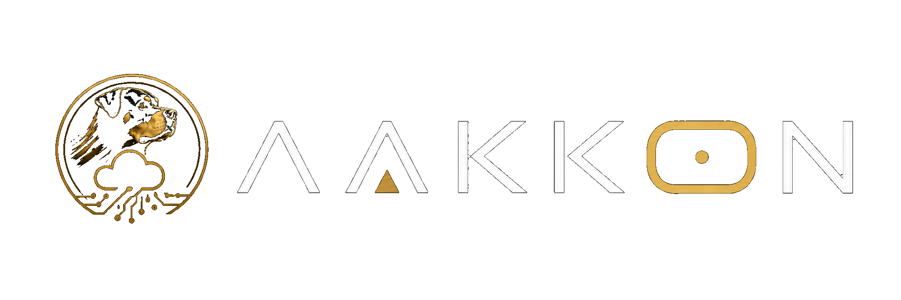
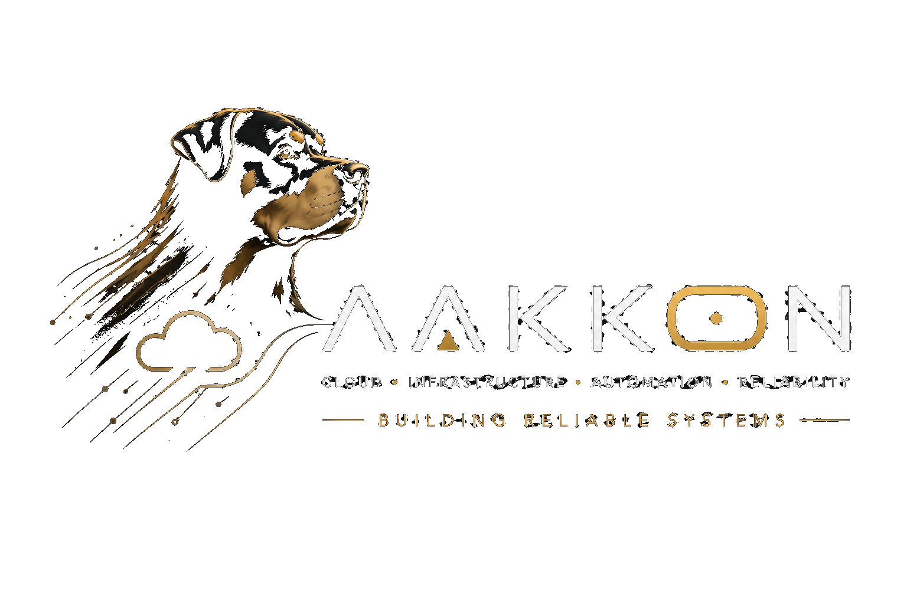

Personal Lab
DevOps laboratory for cloud, containers, automation and safe experimentation.
In development

Building, Exploring and Sharing
Projects. Systems. Ideas. Built with reliability in mind.
A place where I bring together projects, ideas and experience around cloud infrastructure, automation and reliable systems.
I build systems that are simple to operate, reliable by design and able to evolve over time.
My name is Pere Cortijos.
Beyond technology itself, I am particularly interested in connecting people, processes and technology to create solutions that are maintainable, scalable and useful.
AAKKON is not a company. It is my personal space to share projects, ideas, experiments and lessons learned while building systems.
DevOps laboratory for cloud, containers, automation and safe experimentation.
In developmentPersonal cloud storage concept focused on control, structure and long-term reliability.
Private conceptInternal automation-first project focused on maintainable systems.
Private developmentAutomated log collection, event classification and Excel reporting for test bench environments.
Public repositoryDesktop tool for smart file operations, batch renaming and reusable workflow profiles.
Public repository